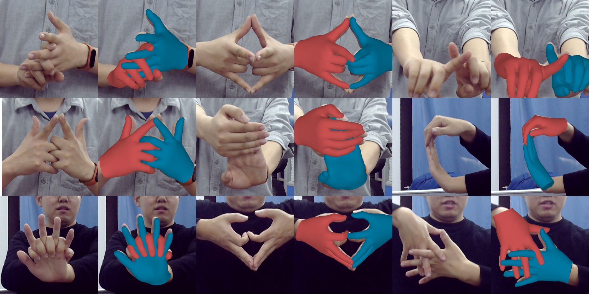
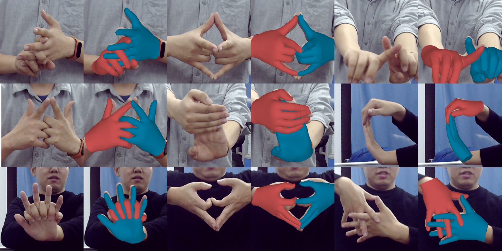

IEEE CVPR 2022
Interacting Attention Graph for Single Image Two-Hand Reconstruction
Mengcheng Li1, Liang An1, Hongwen Zhang1, Lianpeng Wu2, Feng Chen1, Tao Yu1, Yebin Liu1
1Tsinghua University, 2Hisense Inc.
Abstract
Graph convolutional network (GCN) has achieved great success in single hand reconstruction task, while interacting two-hand reconstruction by GCN remains unexplored. In this paper, we present Interacting Attention Graph Hand (IntagHand), the first graph convolution based network that reconstructs two interacting hands from a single RGB image. To solve occlusion and interaction challenges of two-hand reconstruction, we introduce two novel attention based modules in each upsampling step of original GCN. The first module is the pyramid image feature attention (PIFA) module, which utilizes multiresolution features to implicitly obtain vertex-to-image alignment. The second module is the cross hand attention (CHA) module that encodes the coherence of interacting hands by building dense cross-attention between two hand vertices. As a result, our model outperforms all existing two-hand reconstruction methods by a large margin on InterHand2.6M benchmark. Moreover, ablation studies verify the effectiveness of both PIFA and CHA modules for improving the reconstruction accuracy. Results on in-the-wild images further demonstrate the generalization ability of our network.
[arXiv] [Code]

Fig 1. Our network structure. Given an RGB image as input, our network first distills a global feature vector, a sequence of pyramid image features along with other auxiliary predictions (2D pose, segmentation, dense mapping encoding). Then our model directly regresses the 3D coordinates of two hands surface vertices after three steps of IntagHand blocks and upsampling. Each IntagHand block contains a GCN module, a pyramid image feature attention (PIFA) module and a cross-hand attention (CHA) module.
Results
Fig 2. Qualitative results of our method on InterHand2.6M test dataset. Our method works well under various kinds of interactions. Note that, our method could even produce correct finger level interactions without explicit collision detection.
 

Fig 3. Qualitative results of our method on in-the-wild images. Our method performs well on our real-life data captured by a common USB camera.
Technical Paper
Demo Video
Citation
Mengcheng Li, Liang An, Hongwen Zhang, Lianpeng Wu, Feng Chen, Tao Yu, Yebin Liu. "Interacting Attention Graph for Single Image Two-Hand Reconstruction". In Proceedings of IEEE/CVF Conf. on Computer Vision and Pattern Recognition (CVPR), 2022.
@inproceedings{Li2022intaghand,
title={Interacting Attention Graph for Single Image Two-Hand Reconstruction},
author={Mengcheng Li, Liang An, Hongwen Zhang, Lianpeng Wu, Feng Chen, Tao Yu and Yebin Liu},
booktitle={IEEE/CVF Conf. on Computer Vision and Pattern Recognition (CVPR)},
month=jun,
year={2022},
}